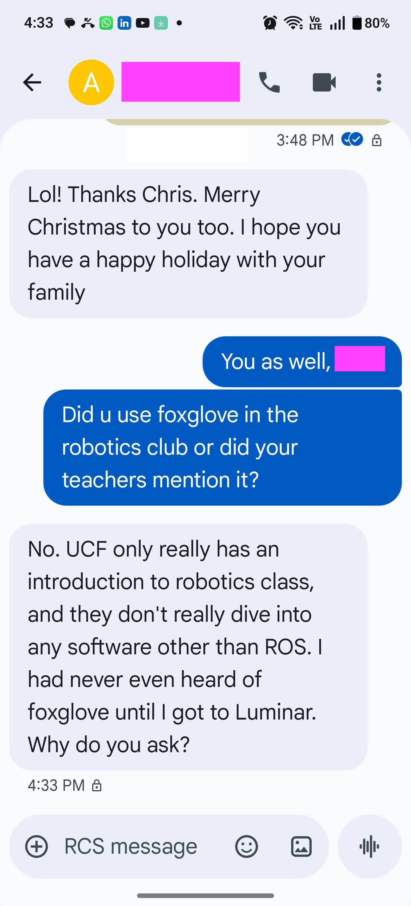

Fred Kilday
KITTI Dataset Validation & AI-Powered Configuration
Students learning on KITTI, nuScenes, Argoverse...
...but never discovering Foxglove.
Clicked the KITTI-360 demo link.
Stunning visualization. Everything synchronized.
I thought: "This is what students should see."
"Let me try to recreate it."
Opened in Foxglove Desktop...
Top panels: semantic camera with rendering artifacts. Bottom 3D panels: only trajectory line—no point cloud visible despite data existing in topic list.
This is what users face after download.
2 minutes of clicking through settings, enabling topics, adjusting frames. Shows real friction: which topic? which frame? what point size?
Expert knowledge required. This took 4+ hours total across multiple attempts.
kitti-demo.mcap with test-layout-v4. Point cloud and camera synchronized, playing smoothly.
This is the end state after manual configuration.
Built what should exist:
4 hours → 15 minutes
Built an AI configuration generator:
Human expertise once → AI scales to all users
The Broken Funnel:
50,000 students/year learn on KITTI
↓ Hit onboarding friction
↓ Use RViz instead
↓ Graduate
↓ Lost enterprise customers
Fix onboarding → Fix the growth engine
1. Systematic Gap Validation
2. CSE Who Ships
3. POC Thinking
CSE with builder mentality: validate problems, ship solutions, explore what's possible.
Ready to show:
Questions?